Chapter 8 Correlations and ARIMA
8.1 Auto-Correlation (ACF and PACF)
In the previous chapter we said that a time series is said to be stationary if there is:
- no trend (no systematic change in mean, that is, time invariant mean), and no seasonality (no periodic variations);
- no change in variance over time (time invariant variance);
- no auto-correlation (we’ll return to this topic in the next chapters)
Auto-correlation or serial correlation is an important characteristic of time series data and can be defined as the correlation of a variable with itself at different time points.
Autocorrelation has many consequences. It prevents us to use traditional statistical methods such as linear regression, which assume that the observations are independent from each other. In presence of autocorrelation, the estimated standard errors of the parameter estimates will tend to be less than their true value. This will lead to erroneously high statistical significance being attributed to statistical tests (the p values will be smaller than they should be).
In this section we introduce an important tool for the diagnosis of the properties of a time series, including autocorrelation: the correlogram. The accurate study of correlogram is a common step in many time series analysis procedures.
8.1.1 Correlogram: ACF and PACF
The correlogram is a chart that presents one of two statistics:
- the autocorrelation function (ACF).The ACF statistic measures the correlation between \(x_t\) and \(x_{t+k}\) where k is the number of lead periods into the future. It measures the correlation between any two points based on a given interval. It is not strictly equivalent to the Pearson product moment correlation. In R, ACF is calculated and visualized with the function “acf”;
- the partial autocorrelation function (PACF). The PACF(k) is a measure of correlation between times series observations that are k units apart, after the correlation at intermediate lags has been controlled for or “partialed” out. In other words, the PACF measures the correlation between \(x_t\) and \(x_{t+k}\) after it has stripped out the effect of the intermediate x’s. In R, the PACF is calculated and visualized with the function “pacf”. It is useful to detect correlations that are not evident in ACF.
Let’s consider, as an example, the correlogram of a random walk process. We know that this is a particular time series process in which the current values are combinations of the previous ones (\(x_t = x_{t-1} + w_t\), where \(x_{t-1}\) is the value immediately before x, and \(w_t\) is a random component). The resulting time series is characterized by a discernible pattern over time which is not exactly predictable (stochastic trend). The ACF of a random walk time series, indeed, shows a correlation between values in the series: even values not so close are notwithstanding correlated.
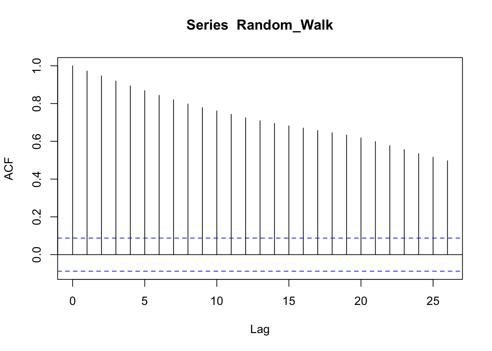
Instead, the PACF, which removes the correlations between intermediate values, shows a correlation at lag 1, that is, it shows that the overall correlation depends on consequent values. The dotted blue lines signal the boundaries of statistical significance.
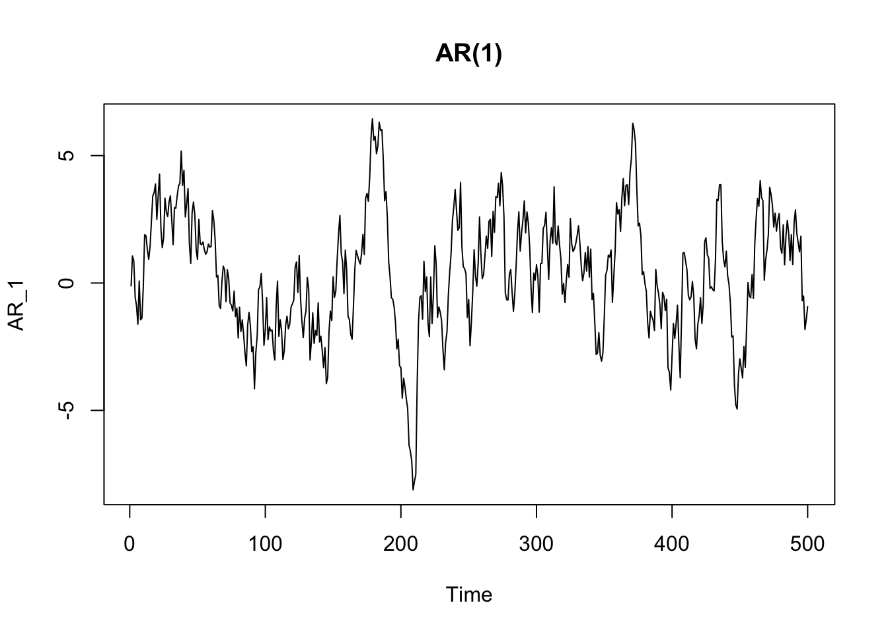
We can clearly visualize the auto-correlation by using a simple scatterplot, by plotting two consecutive lines of points.
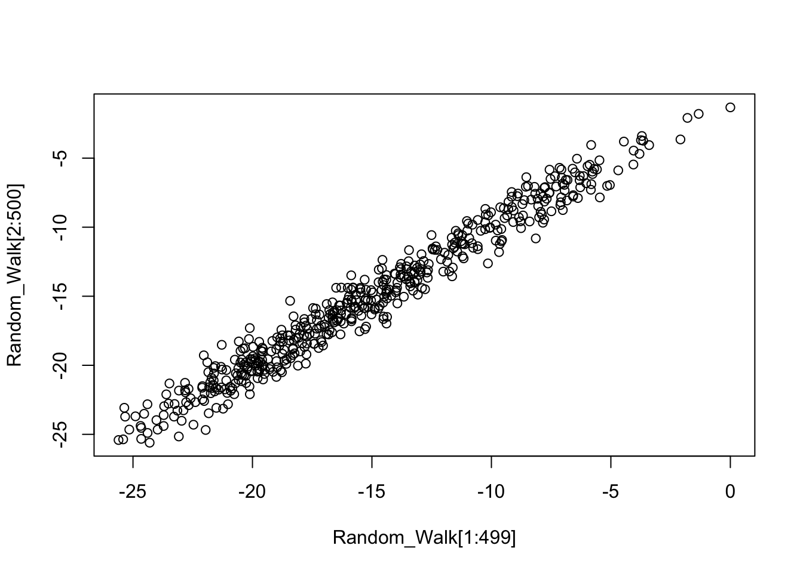
The ACF or PACF of a white noise process is very different. We know that white noise is a stationary process, without distinguishable points in time and no correlation between points. Indeed, the ACF of white noise shows no correlation (the only line above statistical significance is at zero, which is nothing to be worried about, since it just means that each point is correlated with itself).

In the PACF we can see that there is nothing above the dotted line (which means that there is nothing statistically significant).
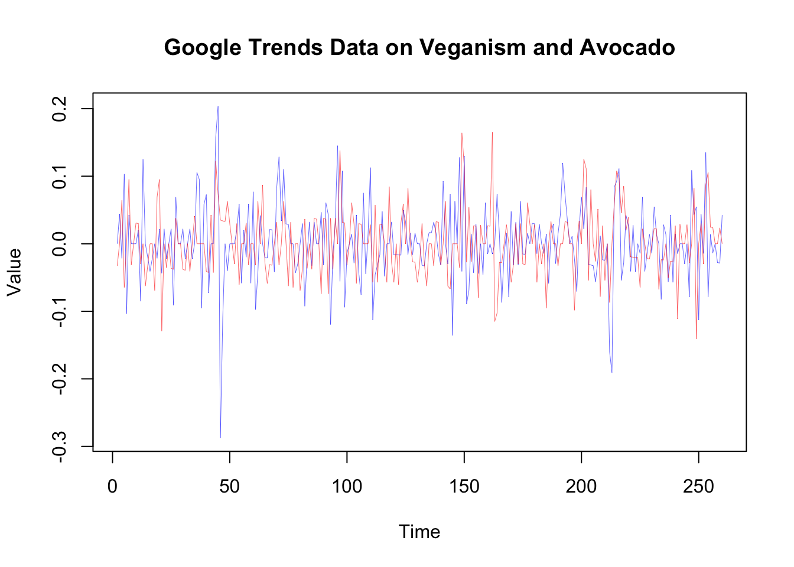
If we plot two consecutive lists of points by using a scatterplot, we can see there is no serial correlation (no pattern is visible):
8.2 ARIMA models
The ACF and PACF plots can be used to diagnose the main characteristics of a time series and find a proper statistical model. We talk about univariate models, since they are models to describe a single time series. Univariate time series can be modeled as Auto Regressive (AR), Integrated (I), and Moving Average (MA) processes. These models are synthesized using the acronym ARIMA. When a seasonal (S) component is also taken into account, we also use the acronym SARIMA.
8.2.1 Auto Regressive (AR) models
We just said that a time series is often characterized by auto-correlation, so we can clearly deduce that we can model it by using a regression model, that is, by regressing the time series on its past values. In this way we have an auto-regressive model: a regression of \(x_{t}\) on past terms \(x_{t-k}\) from the same series.
In time series analysis, past terms \(x_{t-k}\) from a same series are called lags. The lagged values of a time series are its delayed values, where the delay can be of an arbitrary amount of time \(k\). For instance, considering a simple series of 4 data points distributed from time \({t+0}\) (first data point) to time \({t+3}\) (last data point) \({x_{t+0}, x_{t+1}, x_{t+2}, x_{t+3}}\), the corresponding lagged series, assuming \(k=1\), is \({NA, x_{t+0}, x_{t+1}, x_{t+2}}\). Notice that the first data point is missing since there is no data point behind it, and the other data points are shifted one time point ahead.
An auto-regressive (AR) model can be described as follows (the \(\alpha\) are coefficients, \(t\) are time points, \(w\) is a random component or white noise):
\[ {x_t} = \alpha x_{t-1} + \alpha x_{t-2} + \alpha x_{t-k} + {w_t} \]
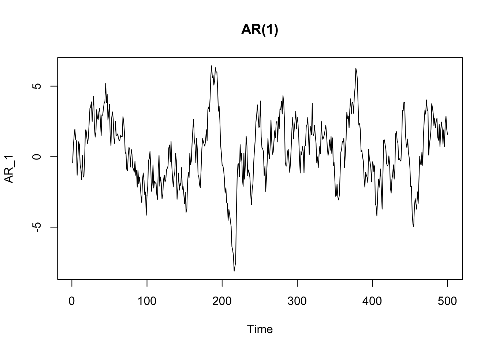
The ACF of an autoregressive process typically shows a slow and gradual decay in autocorrelation over time.
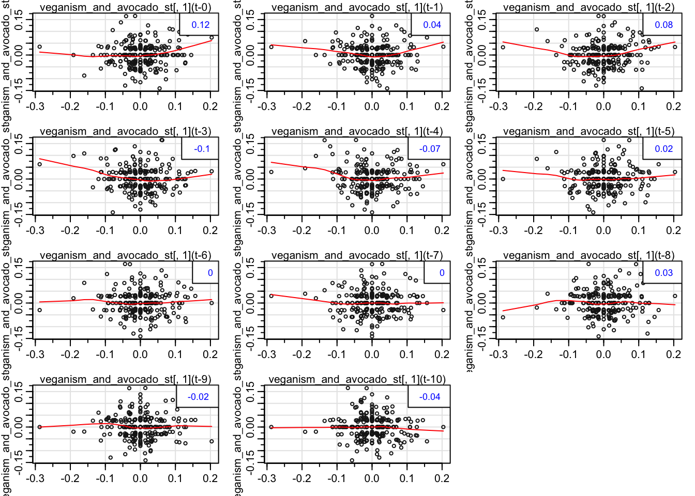
The PACF of an autoregressive process shows a peak in correspondence with the order of the model. In the case of an AR(1) the peak is at time 1.
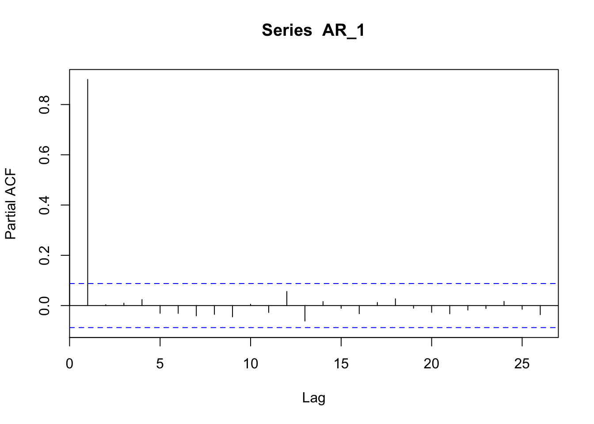
In the case of an AR(3) the peak is at time 1, 2, and 3.
AR_3 <- arima.sim(n = 500, list(order = c(3,0,0), ar = c(0.3, 0.3, 0.3)))
plot(AR_3, main = "AR(3)")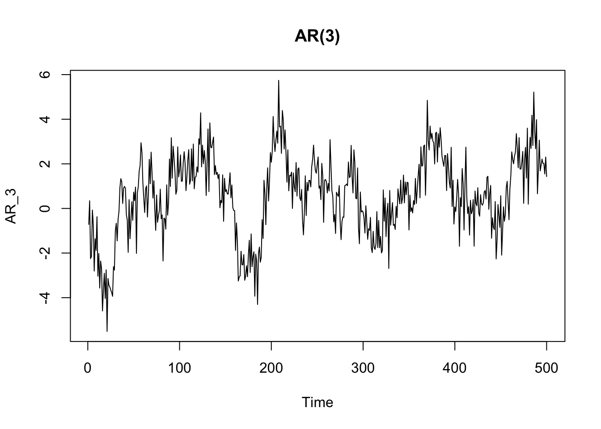

Now we can see that the random walk process we have seen above is a particular case of auto-regressive model. In a random walk process, each value is the previous one plus a random part:
\[ x_t = x_{t-1} + w_t \]
Thus each point \(x_t\) is correlated with the previous one \(x_{t-k}\) where the lag value \(k\) is equal to 1 (\({k=1}\)). Therefore, a random walk process is an auto-regressive model of order 1, since just 1 lag is taken into consideration in the auto-regressive model (and with \(\alpha = 1\)). The order of an auto-regressive model is indicated by parenthesis, e.g.: AR(1).
The AR process can have different characteristics (and different ACF and PACF) based on the parameters.
8.2.2 Moving Average (MA) models
We already know Moving Average as a method to smooth time series and detect a trend. When referring to Moving Average as a process (MA), we refer to a process in which the values of the series are a function of a weighted average of past errors. In other terms, a moving average (MA) process is a linear combination of the current white noise term and the \(q\) most recent past white noise terms:
\[ {x_t} = w_t + \beta w_{t-1} + ... + \beta w_{t-q} \]
The order of a MA process indicates the lags of white noise taken into account in the model (e.g: MA(3)).
MA_3 <- arima.sim(n = 500, list(order = c(0,0,3), ma = c(0.3, 0.3, 0.3)))
plot(MA_3, main = "MA(3)") The ACF plot of a MA process shows a more clear cut-off after the term corresponding to the order ot the process. It is different from the ACF of an AR process, which shows a more gradual decay.
The ACF plot of a MA process shows a more clear cut-off after the term corresponding to the order ot the process. It is different from the ACF of an AR process, which shows a more gradual decay.
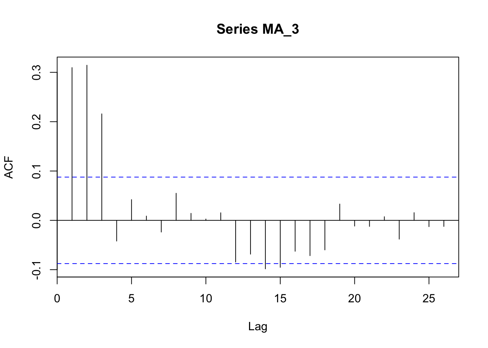
The PACF of a MA process shows an up-and-down movement and does not shut off, but instead tapers toward 0 in some manner.
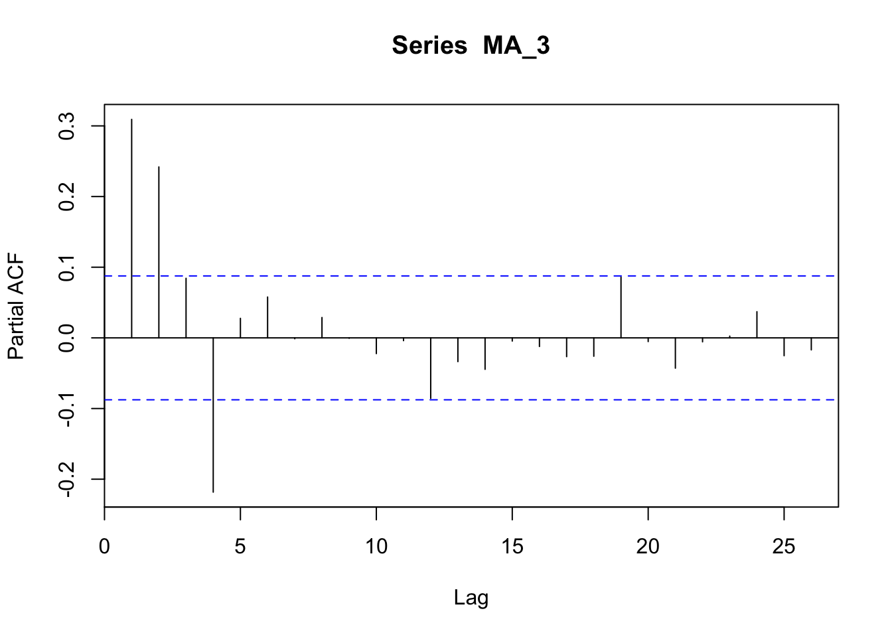
8.2.3 Integrated (I) process
An integrated process is a non-stationary time series process that becomes stationary when transformed by differencing. In other words, an integrated process is a difference-stationary process, that is a process with a stochastic trends (see the previous chapter).
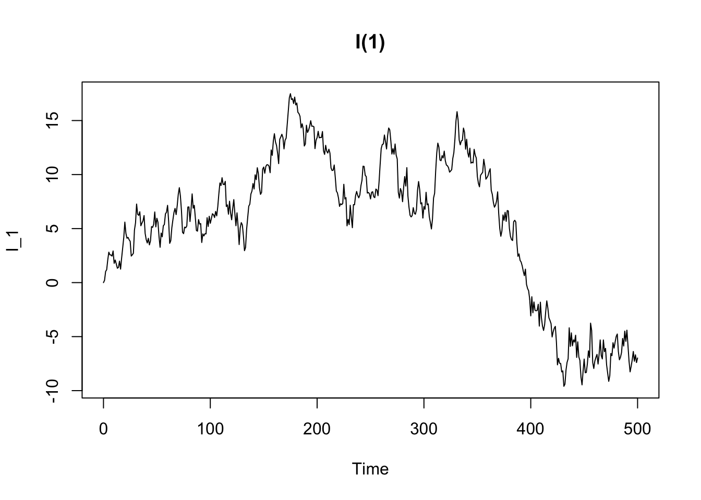
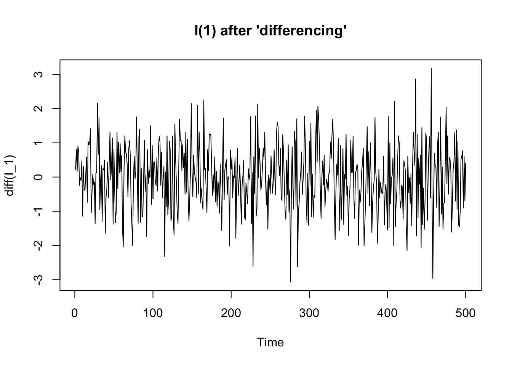
8.2.4 Seasonal (S) models
We already introduced the seasonal model. For instance, a dataset showing a seasonal component is AirPassengers. The seasonality appears in the yearly fluctuations in the ACF and in the spikes occurring at 12 months from each other in the PACF.
data("AirPassengers")
# this function par(mfrow=c(..., ...))
# is used to combine more than one plot
# in the same frame. The two numerical values
# indicates number of rows and columns
# the frame is made of
par(mfrow=c(1,2))
acf(AirPassengers, lag.max = 48)
pacf(AirPassengers, lag.max = 48)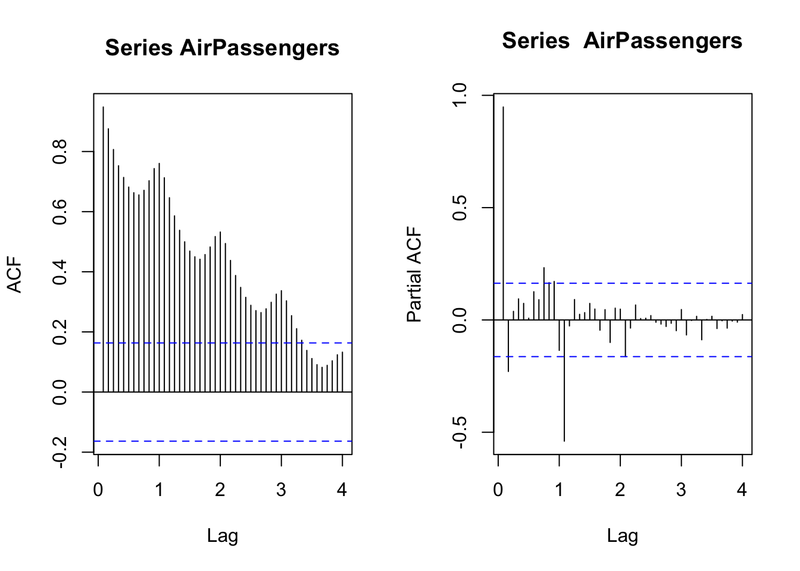
8.2.5 Fit (S)ARIMA models
The above examples represent simple processes, but real time series are often the result of more complex mixtures of different types of process, and therefore it is more complex to identify an appropriate model for the data.
set.seed(7623)
arima_112 <- arima.sim(n = 500, list(order = c(1,1,2), ar = 0.8, ma = c(0.7, 0.2)))
plot(arima_112, main = "ARIMA(1,1,2)")
A popular methods to find the appropriate model is the Box-Jenkins method, a recursive process involving the analysis of a time series, the guess of possible (S)ARIMA models, the fit of the hypothesized models, and a meta-analysis to determine the best specification. Once a best-fitting model has been found, the correlogram of the residuals should be verified as white noise.
The Box-Jenkins method could be time-consuming and requires some expertise. ACF/PACF can also become difficult to read in case of complex models, and their appropriate interpretation could require a lot of expertise as well. Fortunately, experts have developed automated methods that allow us to automatically found and fit an ARIMA model. This is the case of the auto.arima function implemented in the forecast package (a package for time series analysis and especially for forecasting, developed by Rob J. Hyndman, professor of statistics and time series analysis expert).
# Install the package if you haven't installed it yet
# install.packages("forecast")
library(forecast)
arima_fit <- auto.arima(arima_112)
arima_fit## Series: arima_112
## ARIMA(1,1,2)
##
## Coefficients:
## ar1 ma1 ma2
## 0.7649 0.7387 0.2484
## s.e. 0.0356 0.0528 0.0534
##
## sigma^2 estimated as 1.035: log likelihood=-717.9
## AIC=1443.8 AICc=1443.88 BIC=1460.65As said above, to evaluate the fit of a model we should analyze the residuals, and ascertain they behave as white noise. The object resulting from the function auto.arima has a slot including the residuals. To ascertain that residuals are white noise we can plot its ACF and PACF (no spike should be significant) and also its histogram.
layout(matrix(c(1,2,3,3), nrow = 2))
acf(arima_fit$residuals)
pacf(arima_fit$residuals)
hist(arima_fit$residuals, main = "Histogram of residuals")
The forecast package also implements the function checkresiduals to create nice and complete plots of residual diagnostics by using a simple function.
Besides creating the plots, the function calulate the Ljung-Box test (default), or the Breusch-Godfrey test (if you specify test=“BG” inside the function):
The Ljung-Box test (and also the Breusch–Godfrey test) is a diagnostic tool, applied to the residuals of a time series after fitting an ARIMA model, to test the lack of fit. The test examines the autocorrelations of the residuals. If there are no significant autocorrelations, it can be concluded that the model does not exhibit significant lack of fit. To pass the test, the p-value has to be above the significance level (usually 0.05)
##
## Ljung-Box test
##
## data: Residuals from ARIMA(1,1,2)
## Q* = 5.8977, df = 7, p-value = 0.5517
##
## Model df: 3. Total lags used: 108.2.5.1 SARIMA
If we fit a model to the AirPassengers dataset, which has a seasonal component, we find a Seasonal Autoregressive Integrated Moving Average model (SARIMA). The seasonal component of the AirPassenger dataset is evident in the plot of the series and its ACF and PACF. The forecast package has a useful function ggtsdisplay to plot a time series along with its ACF and PACF.

The seasonal part of the ARIMA model consists of terms that are similar to the non-seasonal components of the model, but involves lagged values of the seasonal period.
## Series: window(AirPassengers)
## ARIMA(2,1,1)(0,1,0)[12]
##
## Coefficients:
## ar1 ar2 ma1
## 0.5960 0.2143 -0.9819
## s.e. 0.0888 0.0880 0.0292
##
## sigma^2 estimated as 132.3: log likelihood=-504.92
## AIC=1017.85 AICc=1018.17 BIC=1029.358.2.5.2 Forecasting
Based on the ARIMA models we found, we can also try to forecast future values. We can use the function forecast of the homonym library. For instance, we could try to forecast the values of the AirPassenger dataset in the next four years.
AirPassengers_forecast <- forecast(AirPassengers_sarima, h=48, level = 90)
plot(AirPassengers_forecast, main = "AirPassengers forecast")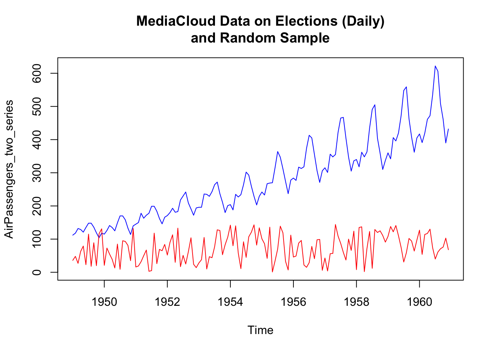
8.3 Cross-correlation
Cross-correlation is the correlation between the (lagged) values of a time series and the values of another series. Similarly to ACF and PACF, there is a specific plot that shows the cross-correlation between two time series, and a specific R function: ccf.
The cross-correlation can be useful to understand wich lagged values of a X series can be used to predict the values of a Y series, and thus used, for instance, in a time series regression model.
Unfourtunately, the problem with the cross-correlation function is that, as we said in the preceding sections, with autocorrelated data it is difficult to assess the dependence between two processes, and it is possible to find spurious correlations.
Thus, it is pertinent to disentangle the linear association between X and Y from their autocorrelation. A useful device for doing this is prewhitening. The prewhitening method works as follows:
- determine an ARIMA time series model for the X-variable, and store the residuals from this model;
- fit the ARIMA X-model to the Y-variable, and keep the residuals;
- examines the CCF between the X and Y model residuals.
We can implement this procedure writing all the necessary code, or by using the library forecast, or also, alternatively, the library TSA.
To make an example, we apply the method to two simulated two series. The Y-variable is created in such a way that it is correlated with the lagged values at time \(x_{t-3}\) and \(x_{t-4}\). Therefore, we should find a correlation at those lags.
x_series <- arima.sim(n = 200, list(order = c(1,1,0), ar = 0.7, sd=1))
z <- ts.intersect(x_series, stats::lag(x_series, -3), stats::lag(x_series, -4))
y_series <- 15 + 0.8*z[,2] + 1.5*z[,3] + rnorm(197,0,1)The cross-correlation applied to the original series results in a plot where everything seems to be correlated. The “real” correlation at \(x_{t-3}\) and \(x_{t-4}\) is not discernible at all.

By using the forecast library, we can calculate the pre-withened ccf as follows:
# fit an ARIMA model
x_model <- auto.arima(x_series)
# keep the residuals ("white noise")
x_residuals <- x_model$residuals
# fit the same ARIMA model to the Y-series
# by using the "Arima" function in forecast
y_model <- Arima(y_series, model=x_model)
# keep the residuals
y_filtered <- residuals(y_model)
# apply the ccf to the residuals
ccf(x_residuals, y_filtered)
Now, it’s clear that the X-variable is correlated with the Y-variable at \(x_{t-3}\) and \(x_{t-4}\).
The previous steps show in some detail the steps involved in the pre-whitening strategy, but it is possible to use the original series with the prewhiten function of the TSA library. Although the function can take, as an argument, a pre-fitted ARIMA model, its greater advantage is that it can take care of all the necessary steps to prewithen the series. In particular, if no model is specified, the library automatically applies a simple AR model. Although this model can be just an approximation of the “true” model (which can be more complex), an approximation can be enough to pre-whiten the series and find a proper cross-correlation (that is, also a simpler and approximate model can do the job).
## Registered S3 methods overwritten by 'TSA':
## method from
## fitted.Arima forecast
## plot.Arima forecast##
## Attaching package: 'TSA'## The following object is masked from 'package:readr':
##
## spec## The following objects are masked from 'package:stats':
##
## acf, arima## The following object is masked from 'package:utils':
##
## tar
8.4 Examples in literature
A few examples to exemplify the use of ARIMA and Cross-Correlation in the scientific literature, with specific reference to communication science.
In Scheufele, B., Haas, A., & Brosius, H. B. (2011). Mirror or molder? A study of media coverage, stock prices, and trading volumes in Germany. Journal of Communication, 61(1), 48-70, the authors investigate “the short-term relationship between media coverage, stock prices, and trading volumes of eight listed German companies”, by using ARIMA and cross-correlation, in particular asking:
RQ2: Do cross-lagged correlations between media coverage and stock prices or trading volumes differ according to the amount and the valence of coverage? RQ3: Do cross-lagged correlations between media coverage and stock prices or trading volumes differ according to the type of media (Financial Web sites, daily newspapers, and stock market TV shows) which reports on the company or stock?
To answer these questions, the authors made use of time series analysis. In particular, they:
estimated cross-lagged correlations between media coverage and stock prices or trading volumes, respectively. Basically, two steps of time-series analysis can be distinguished: (a) In the first step, each media time-series and each time-series of trading volumes was adjusted by ARIMA (Autoregressive Integrated Moving Average) modeling separately. The differences between the original time-series and its ARIMA model are called residuals and were used for analysis. Like with ordinary least squares regression, these residuals should not be auto-correlated. If the residuals are not auto-correlated, time-series analysis speaks of White Noise. This modeling technique called prewhitening was necessary to avoid spurious correlations. (…) (b) In the next step, cross-correlations between each adjusted media time-series and each adjusted stock series were calculated. (…) The coefficient expresses the strength of correlation, whereas the lags offer an insight into dynamics: Correlations at positive (negative) lags indicate that changes in media coverage proceeded (succeeded) shifts in stock prices or trading volumes.
In Groshek, J. (2010). A time-series, multinational analysis of democratic forecasts and Internet diffusion. International Journal of Communication, 4, 33, the author examines the democratic effects that the Internet has shown using macro- level, cross-national data in a sequence of time–series statistical tests:
this study relies principally on macro-level time–series democracy data from an historical sample that includes 72 countries, reaching back as far as 1946 in some cases, but at least from 1954 to 2003. From this sample, a sequence of ARIMA (autoregressive integrated moving average) time–series regressions were modeled for each country for at least 40 years prior to 1994. These models were then used to generate statistically-forecasted democracy values for each country, in each year from 1994 to 2003. A 95% confidence interval with an upper and lower democracy score was then constructed around each of the forecasted values using dynamic mean squared errors. The actual democracy scores of each country for each year from 1994 to 2003 were then compared to the upper and lower values of the confidence interval. In the event that the actual democracy level of any country was greater than the upper value of the forecasted democracy score during the time period of 1994 to 2003, Internet diffusion was investigated in case studies as a possible causal mechanism.
In other terms, the author used a forecasting approach to predict the values of the series from 1994 to 2003, in order to find statistically significant differences between the predicted and the actual values. These discrepancies were interpreted as caused by factors that were not present in the past, and possibly by the introduction of the Internet.
The study found that, based on the results of the 72 countries reported here, the diffusion of the Internet should not be considered a democratic panacea, but rather a component of contemporary democratization processes